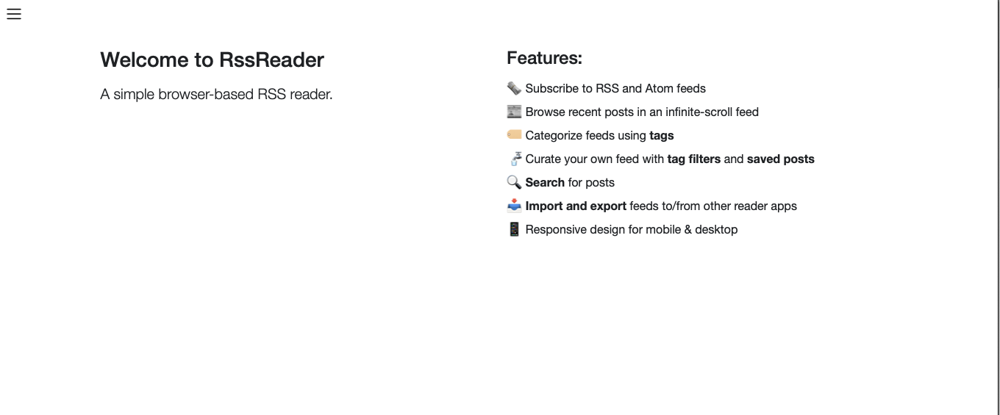

RSS Reader
Screenshots


Developer Log
After learning how to use Blazor to run C# in the browser, I wanted to build another app. This time, I wanted to make something I would use regularly, instead of just making another simple game. I've long been a fan of RSS feeds. A great app I've used in the past is Feedly. However, I knew RSS was a pretty simple protocol, so I could probably figure out how to build it myself. I decided to go for it... and my RSS reader is born!
As a fan of the democratization of power made possible by technology, I've found myself latching onto the open protocols movement. This movement is about breaking free of the algorithms on social media that game our brainwaves every waking moment. As I see it, a recent wave was started by Mastodon (decentralization with ActivityPub) and Bluesky (open standards like ATProto). But, there are older examples of great open protocols, like the venerable HTTP protocol that brought us hypermedia. RSS is another gem of an open protocol. With an RSS reader, you subscribe to the feeds you want, plain and simple. You get no more and no less content shoved into your reader. Using an RSS reader is a step toward creating your own reality on the web by curating your reading diet. It also lets you discover some seriously underrated, high-quality journalists and bloggers that are out there publishing work for little or no payment.
Conclusion
This RSS reader was a great project. It's simple, but it's one of the first real apps I've created that I use daily. Tune in for later posts on the lessons learned and interesting takeaways.